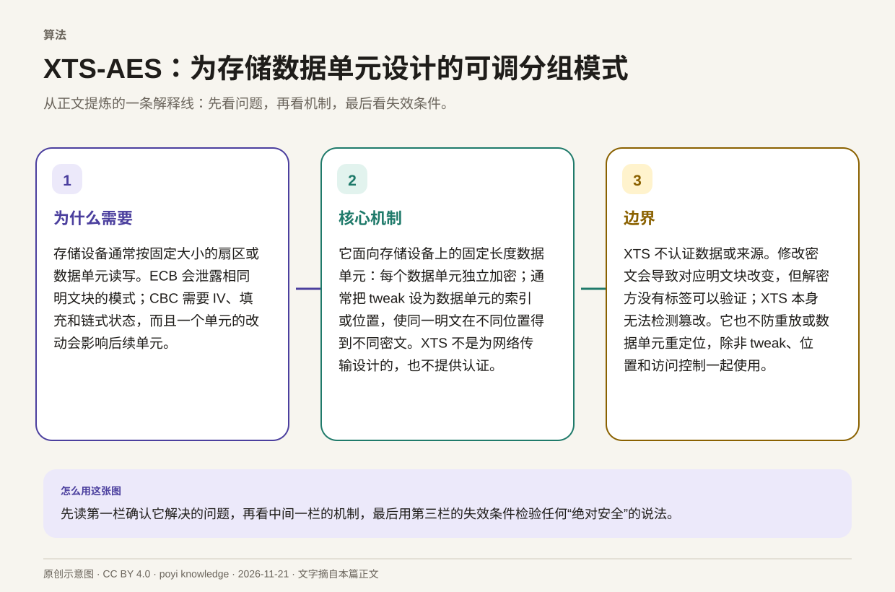
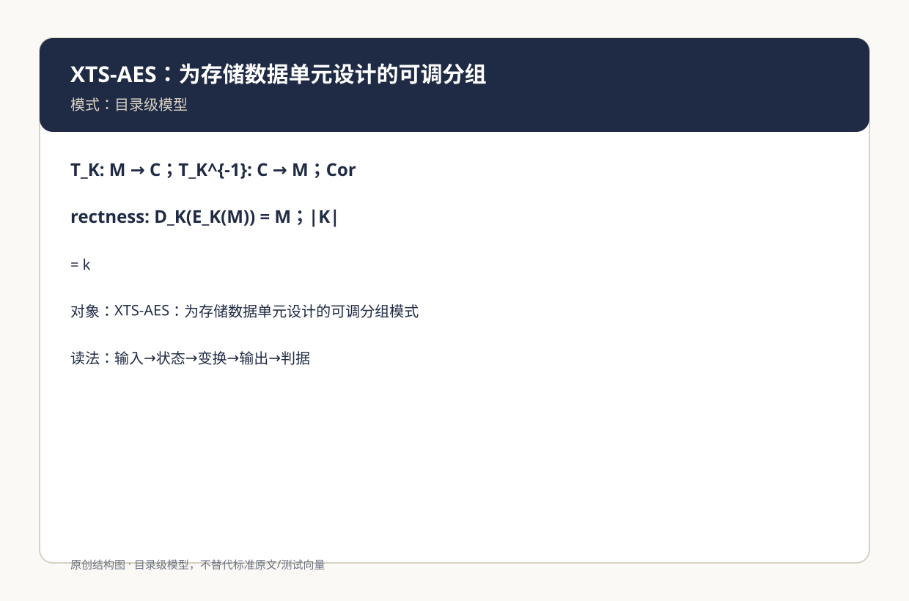

原理与机制
算法：XTS 磁盘加密模式（XTS）。XTS-AES 是 AES 的一种工作模式，全称是 XEX Tweakable Block Cipher with Ciphertext Stealing。它面向存储设备上的固定长度数据单元：每个数据单元独立加密；通常把 tweak 设为数据单元的索引或位置，使同一明文在不同位置得到不同密文。XTS 不是为网络传输设计的，也不提供认证。XTS-AES 使用两个 AES 密钥：K1 处理数据块，K2 处理 tweak。对 128 位 tweak i，先计算 T = E_K2(i)；第 j 个块的 tweak 为 T_j = alpha^j * T，其中乘法在 GF(2^128) 中进行，模多项式为 x^128 + x^7 + x^2 + x + 1。每个块的加密是 XEX：
C_j = E_K1(P_j xor T_j) xor T_j
解密使用同一个 tweak 序列和逆向函数：
P_j = D_K1(C_j xor T_j) xor T_j
XTS-AES-128 的密钥是 256 位，由两个 128 位 AES 密钥组成；XTS-AES-256 的密钥是 512 位，由两个 256 位 AES 密钥组成。数据单元的长度不得超过 2^20 个 AES 块。当数据单元的长度不是 128 位的整数倍时，XTS 使用密文窃取（ciphertext stealing）。设明文由若干完整块 P_0 ...P_(m-1) 和一个非空部分块 P_m 组成。先对最后一个完整块计算一个完整的中间块，取其前 s 位作为部分密文 C_m；再用 P_m 加上被截掉的剩余位组成一个完整块，加密得到 C_(m-1)。这样密文与明文等长，不需要填充。标准允许把最后一个完整块和部分块在物理存储中交换位置，只要接口按约定还原逻辑顺序。

为什么重要
存储设备通常按固定大小的扇区或数据单元读写。ECB 会泄露相同明文块的模式；CBC 需要 IV、填充和链式状态，而且一个单元的改动会影响后续单元。XTS 通常用数据单元索引作为 tweak，从而区分不同位置；用密文窃取避免数据扩展，适合就地加密和随机访问。XTS 的设计目标只是机密性。它故意不加认证标签，因为设计目标是不扩展数据长度，带标签的方案会破坏这一目标。SP 800-38E 指出，在没有认证或访问控制的情况下，XTS 比其他只提供机密性的批准模式更能抵抗对加密数据的未授权操纵，但这不等于完整性保护。因此，XTS 适合磁盘和块设备，不适合需要认证的网络协议。需要检测篡改、重放或数据单元重定位时，必须依赖访问控制、上层完整性机制或 AEAD；不能把 XTS 比 ECB/CBC 更难操纵误读成 XTS 提供认证。
应用与实例
XTS-AES 面向使用固定长度数据单元的存储设备。IEEE 1619-2007 规定了 XTS-AES，NIST SP 800-38E 在 2010 年按引用批准该模式，并增加数据单元长度不得超过 2^20 个 AES 块的要求。NIST CAVP 的 XTS 测试文件提供 XTS-AES-128 和 XTS-AES-256 的加密/解密向量，覆盖 128、256、130 和 200 位等数据单元长度。XTS 的典型场景是磁盘、块设备和存储阵列的就地加密。它不是传输层模式：SP 800-38E 明确说 XTS-AES 不是为数据在传输中的加密而设计的。需要认证的传输应使用 AEAD。本文的示例使用 CAVP XTSGenAES128.rsp 的 COUNT 101：256 位数据单元、128 位 tweak、XTS-AES-128。它还用一个 39 字节的数据单元演示字节对齐的密文窃取往返。

边界与攻击面
XTS 不认证数据或来源。修改密文会导致对应明文块改变，但解密方没有标签可以验证；XTS 本身无法检测篡改。它也不防重放或数据单元重定位，除非 tweak、位置和访问控制一起使用。### tweak 与密钥重用
同一个密钥下，不同数据单元应使用不同 tweak。若两个数据单元使用相同密钥和相同 tweak，由 XEX 的确定性可知，它们的密文异或关系会泄露明文异或关系。SP 800-38E 还强调 XTS-AES 的密钥管理很重要，并说明密钥备份结构的 XML 表示不在该推荐范围内。### 数据单元长度限制
SP 800-38E 要求数据单元不超过 2^20 个 AES 块。这个限制是合规要求，不是可选的性能建议；更大的数据单元会改变安全边界，不能靠实现能跑这一点绕过。### 侧信道与物理访问
XTS 不防御侧信道或物理访问。存储设备可能面临冷启动、总线探测、重放和离线修改；XTS 只保护数据内容的机密性，访问控制和上层协议仍负责其余部分。本文的教学实现只做 XTS-AES-128 的固定向量、字节对齐密文窃取往返、tweak 敏感性和篡改演示。它不生成密钥或 tweak、不做常量时间处理、不处理密钥管理、存储映射、协议状态机或侧信道防护，不能用于生产环境。
历史与背景
XTS 建立在 Rogaway 在 2004 年提出的 XEX（XOR-Encrypt-XOR）可调分组密码之上，并加入密文窃取来支持非整块数据单元。IEEE 存储工作组在 IEEE 1619-2007 中规定了 XTS-AES；NIST 在 2010 年的 SP 800-38E 中按引用批准该模式，并增加数据单元长度要求。CAVP 随后提供 XTS-AES 的验证测试和响应文件，覆盖两种密钥长度和多种数据单元长度。XTS 因此成为存储加密的标准化模式，但它的无扩展、无认证设计也决定了它只能解决机密性，不能替代完整的存储安全方案。
逐步示例与核验
复算示例
取标准或公开测试向量中的一组参数，按“输入—执行—输出”记录：先写出该条目的形式式 (C=E_K(P;r),\qquad P=D_K(C))；再按规范顺序执行每一步，最后把输出与独立实现或标准向量逐字节对照。若没有可引用的数值向量，就只记录结构步骤，不伪造输出。
参考出处
- Wikipedia search entry for XTS 磁盘加密模式. https://zh.wikipedia.org/w/index.php?search=XTS%20%E7%A3%81%E7%9B%98%E5%8A%A0%E5%AF%86%E6%A8%A1%E5%BC%8F
- Handbook of Applied Cryptography (Menezes, van Oorschot, Vanstone). https://www.cacr.math.uwaterloo.ca/hac/